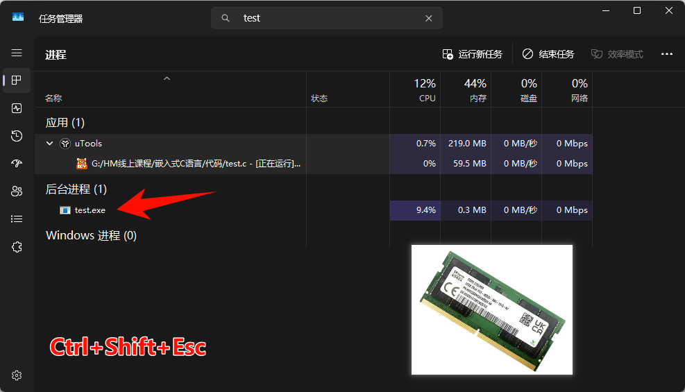
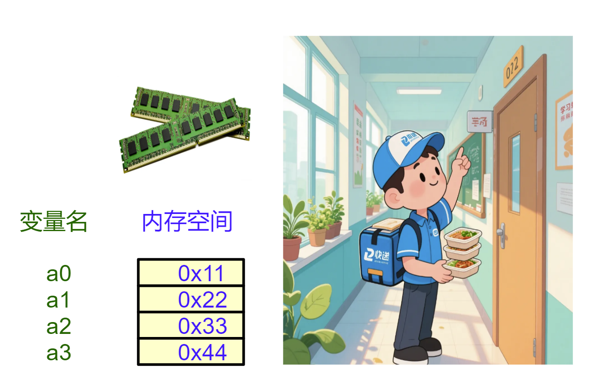
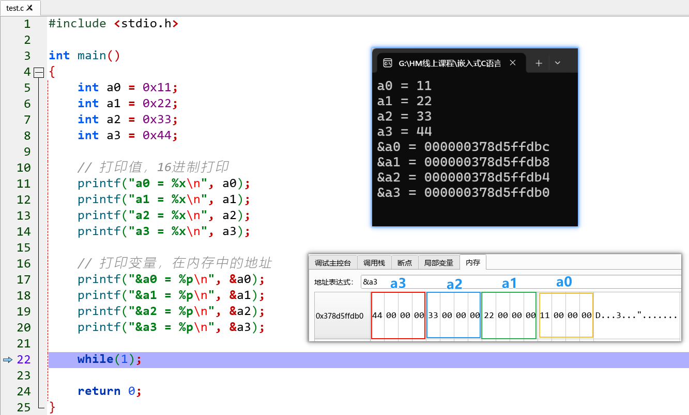
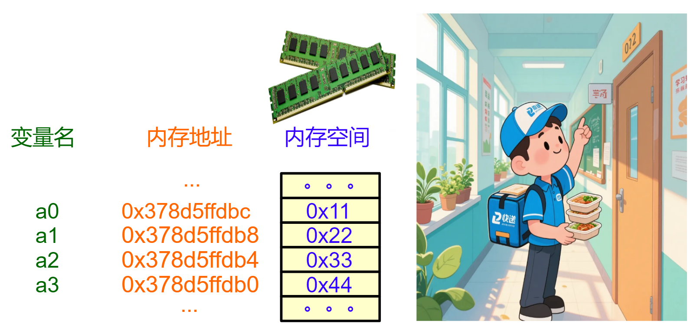
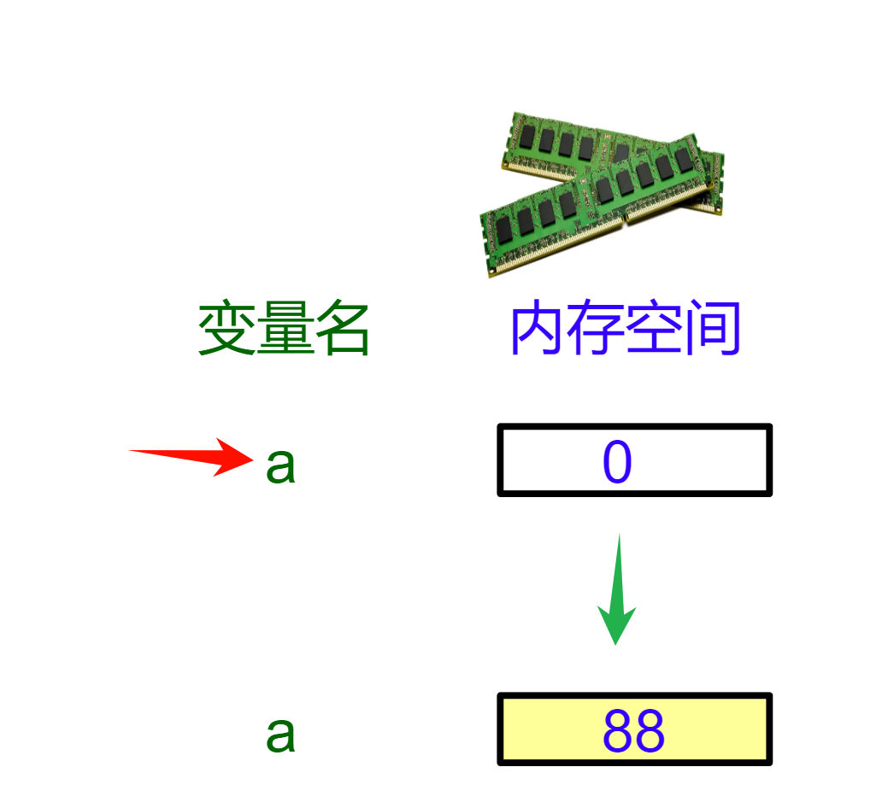
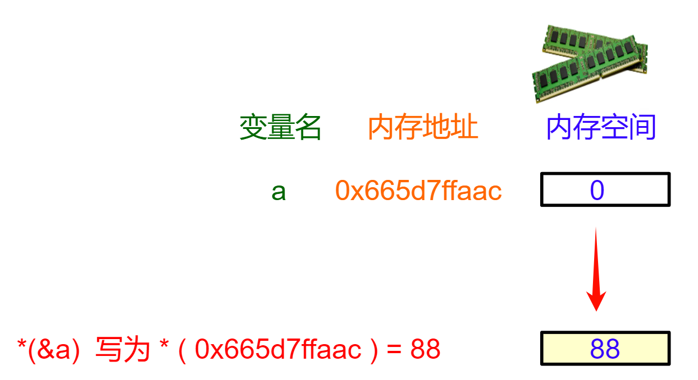
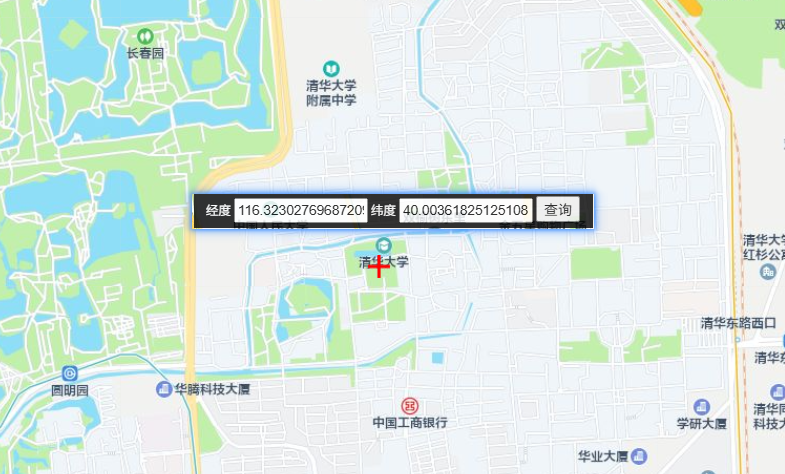
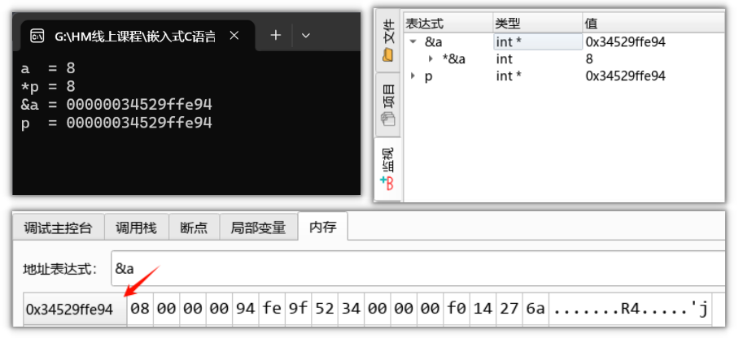
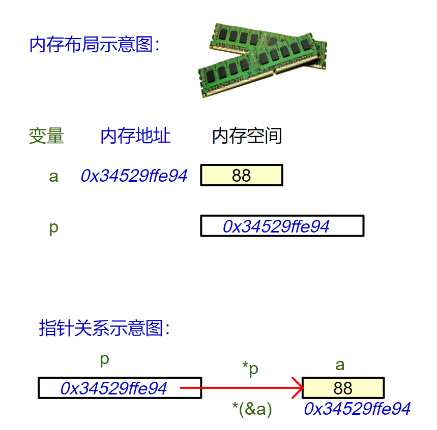

<!DOCTYPE lake>
<h1 data-lake-id="iOZUm" id="iOZUm"><span data-lake-id="uf7767caf" id="uf7767caf">1&gt; 内存地址</span></h1><span class="yuque-card-unsupported">[codeblock]</span><p data-lake-id="u9d4d4e46" id="u9d4d4e46"></p><p data-lake-id="ubf2be941" id="ubf2be941"><span data-lake-id="uaf5f2996" id="uaf5f2996">内存就像一座教学楼</span><span data-lake-id="uf4264805" id="uf4264805">🏨</span><span data-lake-id="u325fa3a6" id="u325fa3a6">，里面有很多教室（内存单元），每个教室都有唯一的门牌号（内存地址）。</span></p><p data-lake-id="ud5e792dd" id="ud5e792dd"><span data-lake-id="u94f263d0" id="u94f263d0">当程序定义变量时：</span></p><p data-lake-id="u3048a3aa" id="u3048a3aa"><span data-lake-id="u7fc776bc" id="u7fc776bc">变量申请空间：比如</span><span data-lake-id="u39b88f79" id="u39b88f79" style="color: #2F4BDA"> int a0 = 0x11;</span><span data-lake-id="u558d5ed7" id="u558d5ed7"> 会占用 4 间教室（ int 占 4 字节）。</span></p><p data-lake-id="uf0d8bc2c" id="uf0d8bc2c"><span data-lake-id="u098b6442" id="u098b6442">变量地址：第一间教室的门牌号，就是这个变量的地址。</span></p><p data-lake-id="udc17eb10" id="udc17eb10"><span data-lake-id="uc642c03d" id="uc642c03d">如何查看变量的地址呢？</span></p><p data-lake-id="u9ef0bee5" id="u9ef0bee5"></p><p data-lake-id="u8832667a" id="u8832667a"><br/></p><hr/><h1 data-lake-id="T8SMx" id="T8SMx"><span data-lake-id="u404cca8d" id="u404cca8d">2&gt; 变量地址</span></h1><p data-lake-id="u9588dafe" id="u9588dafe"><span data-lake-id="u3eabf651" id="u3eabf651">通过调试器和printf()两种种方式查看变量地址</span></p><p data-lake-id="u1c239d5c" id="u1c239d5c"></p><p data-lake-id="ufb0de752" id="ufb0de752"><span class="lake-fontsize-14" data-lake-id="uf1b40583" id="uf1b40583">内存布局图：</span></p><p data-lake-id="u06d5f9ee" id="u06d5f9ee"></p><hr/><h1 data-lake-id="oaAb7" id="oaAb7"><span data-lake-id="u3fc990ac" id="u3fc990ac">🐻</span><span data-lake-id="u2c351b22" id="u2c351b22">实践练习</span></h1><p data-lake-id="uc075521e" id="uc075521e"><span data-lake-id="u3fd63e02" id="u3fd63e02">1&gt; 内存布局图示法是学习指针的</span><span data-lake-id="u97c30255" id="u97c30255" style="color: #DF2A3F">核心工具</span><span data-lake-id="u5162f9fd" id="u5162f9fd">🚀</span><span data-lake-id="ud1e35029" id="ud1e35029">，它能将抽象概念可视化。</span></p><p data-lake-id="u526a8970" id="u526a8970"><span data-lake-id="u8d65424a" id="u8d65424a">     查阅资料，了解内存布局图；</span></p><p data-lake-id="u66aab0bc" id="u66aab0bc"><span data-lake-id="ubd16c095" id="ubd16c095">2&gt; 编写程序 定义4个float变量，打印变量的值和地址，并画出内存布局图。</span></p><hr/><h1 data-lake-id="GDuV2" id="GDuV2"><span data-lake-id="u8c1e9b65" id="u8c1e9b65">3&gt; 访问变量-2种方式</span></h1><h2 data-lake-id="Z6mAr" id="Z6mAr"><span data-lake-id="u104ac1d8" id="u104ac1d8">3.1&gt; 变量名访问</span></h2><p data-lake-id="uc35693c7" id="uc35693c7"><span data-lake-id="u80e80f71" id="u80e80f71">以学校教室为例，我去“高三(5)班”送本书，班级名称送东西；</span></p><span class="yuque-card-unsupported">[codeblock]</span><p data-lake-id="u33f5df76" id="u33f5df76"><span data-lake-id="u4eeba419" id="u4eeba419">内存布局图：</span></p><p data-lake-id="u85962ed4" id="u85962ed4"></p><p data-lake-id="u7a04dae0" id="u7a04dae0"><br/></p><p data-lake-id="u23fc0da3" id="u23fc0da3"><br/></p><hr/><h2 data-lake-id="l2YWa" id="l2YWa"><span data-lake-id="ua89f1799" id="ua89f1799">3.2&gt; 地址访问</span></h2><p data-lake-id="ubafd9e98" id="ubafd9e98"><span data-lake-id="u722b0cec" id="u722b0cec">想象你要在高三(5)班 送一本书，有两种方式：</span></p><p data-lake-id="u928ed677" id="u928ed677"><span data-lake-id="u29b98f1b" id="u29b98f1b">方式1：直接去：我去“高三(5)班”送本书 ➔ 对应代码中的变量名直接访问</span></p><p data-lake-id="uc18859ed" id="uc18859ed"><span data-lake-id="uc96ef0fa" id="uc96ef0fa">方式2：按地址送："深圳市-深圳中学-致远楼305教室" ➔ 对应代码中的通过内存地址访问</span></p><span class="yuque-card-unsupported">[codeblock]</span><p data-lake-id="u9f5b3ef6" id="u9f5b3ef6"></p><hr/><p data-lake-id="ub44aa1a7" id="ub44aa1a7"><span class="lake-fontsize-12" data-lake-id="ueeb66c1a" id="ueeb66c1a">第</span><span data-lake-id="ua1b33772" id="ua1b33772">1️⃣</span><span class="lake-fontsize-12" data-lake-id="ua7ac7a86" id="ua7ac7a86">步：</span><code data-lake-id="u6d8b4e14" id="u6d8b4e14"><span class="lake-fontsize-12" data-lake-id="uaa84a176" id="uaa84a176">&amp;a</span></code><span class="lake-fontsize-12" data-lake-id="u39f7dd81" id="u39f7dd81">，获取变量a的地址为</span><code data-lake-id="u3ea59333" id="u3ea59333"><strong><span class="lake-fontsize-12" data-lake-id="u9591f8b2" id="u9591f8b2">0x665d7ffaac</span></strong></code><strong><span class="lake-fontsize-12" data-lake-id="u986889a4" id="u986889a4">;</span></strong></p><p data-lake-id="ub6a9a032" id="ub6a9a032"><span class="lake-fontsize-12" data-lake-id="u29c690ca" id="u29c690ca">第</span><span data-lake-id="u6c3907e1" id="u6c3907e1">2️⃣</span><span class="lake-fontsize-12" data-lake-id="udb0014f3" id="udb0014f3">步</span><strong><span class="lake-fontsize-12" data-lake-id="ua5fb1a77" id="ua5fb1a77">：*(0x665d7ffaac), </span></strong><code data-lake-id="u3588e816" id="u3588e816"><strong><span class="lake-fontsize-12" data-lake-id="u0bf3235b" id="u0bf3235b" style="color: #DF2A3F">*</span></strong></code><strong><span class="lake-fontsize-12" data-lake-id="ub9b74632" id="ub9b74632">好比快递员</span></strong><span class="lake-fontsize-12" data-lake-id="uaf616c76" id="uaf616c76">🏃</span><span class="lake-fontsize-12" data-lake-id="ueb8d3871" id="ueb8d3871">，通过地址访问a变量空间；</span></p><p data-lake-id="ucb1b2de8" id="ucb1b2de8"><span class="lake-fontsize-12" data-lake-id="u32f2324d" id="u32f2324d">第</span><span data-lake-id="u66c42921" id="u66c42921">3️⃣</span><span class="lake-fontsize-12" data-lake-id="u7e83a3fd" id="u7e83a3fd">步：把88写入内存；</span></p><hr/><p data-lake-id="uec6271d2" id="uec6271d2"><span class="lake-fontsize-12" data-lake-id="ue9fba89f" id="ue9fba89f">😀</span><span class="lake-fontsize-12" data-lake-id="u6385eebc" id="u6385eebc">呦呵！ 这下我们访问变量了：</span></p><p data-lake-id="ua7241d3a" id="ua7241d3a"><span class="lake-fontsize-12" data-lake-id="uf5a8beae" id="uf5a8beae">1 - 变量名a访问 （底层硬件仍通过地址访问）</span></p><p data-lake-id="udec0f42f" id="udec0f42f"><span class="lake-fontsize-12" data-lake-id="u31db43d4" id="u31db43d4">2 - 地址访问*(&amp;a) 。</span></p><p data-lake-id="uf441c5d9" id="uf441c5d9"><span class="lake-fontsize-12" data-lake-id="uc1f29ed2" id="uc1f29ed2">专业术语把</span><code data-lake-id="u3b898c64" id="u3b898c64"><strong><span class="lake-fontsize-12" data-lake-id="u798b989a" id="u798b989a" style="color: #DF2A3F">*</span></strong></code><span class="lake-fontsize-12" data-lake-id="u2ab0a19d" id="u2ab0a19d">称为解引用（Dereference）</span></p><hr/><h1 data-lake-id="zHWTq" id="zHWTq"><span data-lake-id="u4a431ef6" id="u4a431ef6">🐻</span><span data-lake-id="ud749d2f5" id="ud749d2f5">实践练习</span></h1><p data-lake-id="u6497ac51" id="u6497ac51"><span data-lake-id="uea310fb5" id="uea310fb5">编写程序 定义1个float类型变量，通过变量名和地址2种方式读写内存空间；</span></p><p data-lake-id="u565befec" id="u565befec"><span class="lake-fontsize-12" data-lake-id="u9931d28d" id="u9931d28d">用上</span><span data-lake-id="ueef1840c" id="ueef1840c">🚀</span><span data-lake-id="u982981b0" id="u982981b0">秘密武器，画内存布局图理解！</span></p><hr/><h1 data-lake-id="NlNDz" id="NlNDz"><span data-lake-id="ud5a504cd" id="ud5a504cd">4&gt; 指针概念</span></h1><h2 data-lake-id="Ay2XU" id="Ay2XU"><span data-lake-id="ue9d0b061" id="ue9d0b061">4.1&gt; 存储内存地址的变量</span></h2><p data-lake-id="u8369953b" id="u8369953b" style="text-indent: 2em"><span data-lake-id="u6fa16e9c" id="u6fa16e9c">"当我们在中国地图上搜索'清华大学'，它会显示一个精确的坐标位置。</span></p><p data-lake-id="u22da2224" id="u22da2224"><span data-lake-id="u5230c89d" id="u5230c89d">这个坐标，就是清华大学在物理世界中的'地址'。"</span></p><p data-lake-id="u203589ca" id="u203589ca" style="text-indent: 2em"><span data-lake-id="u7ef2bd01" id="u7ef2bd01">"同样的，在计算机的内存世界里，每个变量也有自己独特的'坐标'——我们称之为内存地址。</span></p><p data-lake-id="u8b2287fd" id="u8b2287fd"><span data-lake-id="u9c7bc1c7" id="u9c7bc1c7">就像每个建筑都有唯一的经纬度，每个变量也有唯一的地址标识。"</span></p><p data-lake-id="udcdb2a96" id="udcdb2a96"><span data-lake-id="ua5d54ff2" id="ua5d54ff2">​</span><br/></p><p data-lake-id="ubbdf4b46" id="ubbdf4b46"><span data-lake-id="u7f4fa56f" id="u7f4fa56f">"既然中国地图可以存储和管理所有的地点坐标，</span></p><p data-lake-id="u02ed9830" id="u02ed9830"><span data-lake-id="u72767a65" id="u72767a65">那么在C语言中，有没有类似的工具可以</span><span data-lake-id="u4bb2ec62" id="u4bb2ec62" style="color: #DF2A3F">存储和管理</span><span data-lake-id="u8801b995" id="u8801b995">这些变量的内存地址呢？"</span></p><p data-lake-id="ue2ee5b93" id="ue2ee5b93"><span data-lake-id="ueac874d9" id="ueac874d9">"没错，就是指针(</span><span data-lake-id="u00b980d4" id="u00b980d4" style="color: #DF2A3F">Pointer</span><span data-lake-id="u3456a6d2" id="u3456a6d2">)——它是专门存储地址的容器！"</span></p><p data-lake-id="u02bc183d" id="u02bc183d"></p><hr/><h2 data-lake-id="dahE3" id="dahE3"><span data-lake-id="ud1711cef" id="ud1711cef">4.2&gt; 指针应用</span></h2><span class="yuque-card-unsupported">[codeblock]</span><p data-lake-id="ub6e5a22b" id="ub6e5a22b"><br/></p><p data-lake-id="u76bc7c07" id="u76bc7c07"><span data-lake-id="u74f95a0c" id="u74f95a0c">软件监测：</span></p><p data-lake-id="uab49f841" id="uab49f841"></p><p data-lake-id="ud13fefa8" id="ud13fefa8"></p><p data-lake-id="u95b02ff6" id="u95b02ff6"><span data-lake-id="ue91365b0" id="ue91365b0">"指针</span><code data-lake-id="ub9b12597" id="ub9b12597"><span data-lake-id="u7b67a520" id="u7b67a520" style="color: #DF2A3F">p</span></code><span data-lake-id="udba8f687" id="udba8f687">就像一张导航卡，存储着a的地址(0x34529ffe94)，</span></p><p data-lake-id="u6c31a189" id="u6c31a189"><span data-lake-id="u1cc98c9e" id="u1cc98c9e">当使用</span><code data-lake-id="ucb8d9674" id="ucb8d9674"><span data-lake-id="u124a2366" id="u124a2366" style="color: #DF2A3F">*p</span></code><span data-lake-id="u21d4c889" id="u21d4c889">时，就像按下导航键</span><span class="lake-fontsize-16" data-lake-id="u1c55d5a0" id="u1c55d5a0">➡️</span><span data-lake-id="ub143352c" id="ub143352c">，程序会沿着地址直达目标a的位置，</span></p><p data-lake-id="u9ff59ba9" id="u9ff59ba9"><span data-lake-id="u0552a439" id="u0552a439">用箭头来表示</span><code data-lake-id="u7616dd26" id="u7616dd26"><span data-lake-id="ufc226a78" id="ufc226a78" style="color: #DF2A3F">*p</span></code><span data-lake-id="u43c47df2" id="u43c47df2"> 这种指向关系堪称完美！"</span></p><hr/><h1 data-lake-id="CwsA5" id="CwsA5"><span data-lake-id="ucefbff12" id="ucefbff12">🐻</span><span data-lake-id="u5d01be4d" id="u5d01be4d">实践练习</span></h1><p data-lake-id="u37386cbc" id="u37386cbc"><span data-lake-id="uee94fad1" id="uee94fad1">改写 示例中的程序，通过指针方式，将变量a的值改写为51888，</span></p><p data-lake-id="uf635e520" id="uf635e520"><span data-lake-id="u097ef0cb" id="u097ef0cb">重点画出，内存布局示意图，和指针关系示意图。</span></p><span class="yuque-card-unsupported">[codeblock]</span>